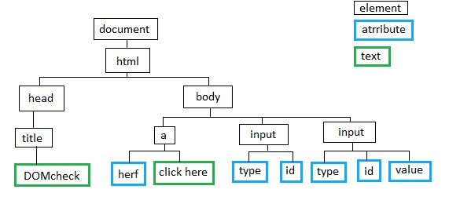

Introdução ao HTML - DOM
De que se trata o DOM?
Sucintamente, DOM significa Document Object Model. A DOM é criada quando, no browser, um página é carregada e é a partir desta interface que a linguagem de programação JavaScript acede ao conteúdo HTML da página referida.
Exemplo de uma "árvore" de objetos HTML - DOM:
A partir da interface DOM e JavaScript é possível serem obtidos, bem como alterados, criados e removidos, elementos HTML, CSS e também é possível reagir a eventos (palavra muito importante no que toca à interação da linguagem JavaScript com o HTML).
Na DOM, todos os elementos HTML são definidos como objetos que contêm propriedades e métodos respetivos:
- As propriedades são parâmetros em que se consegue obter ou alterar o valor (como por exemplo o conteúdo de um elemento HTML);
- Os métodos são ações permitidas sobre o objeto em questão (como por exemplo remover o conteúdo de um elemento HTML).
Exemplo da interação do JavaScript com um elemento HTML (neste caso será escrito "Portfólio de Web Design II" dentro das tags h1):

- Como já foi referido, existem os eventos e a sua importância é bem patente no que toca à interação da linguagem com o HTML pois, por vezes, tem-se por objetivo criar dinamismo, fazendo com que uma parte do código escrito seja executada aquando de um acontecimento (como por exemplo quando um utilizador clica num botão, ou quando se coloca o rato por cima de uma determinada área).
Exemplo de um evento, neste caso tratando-se do evento "onClick()", que chamará uma função predefinida aquando do clique no botão demonstrado:

- Também é possível interagir com os elementos através de eventos utilizando EventListeners e passando como argumentos para estes um EventHandler. É, de resto, possível conjugar vários event handlers num mesmo event listener.
Exemplo da utilização de um EventListener(), com dois event handlers diferentes:

Considerações finais
- Foi sem dúvida necessária uma introdução a tema presente nesta secção na parte teórica da disciplina para a qual produzo este relatório/portfólio pois, desta forma foi conseguida uma melhor visualização global acerca do uso posterior da linguagem JavaScript de modo a interagir com o DOM;
- O ensino académico da cadeira de Web Design II seguiu sempre uma "cadeira de temas" lógica e este conceito abrangido é prova desse facto.